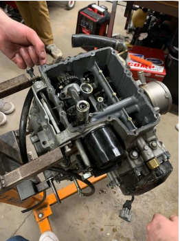

Engine Rebuild


Rebuilding a Yamaha R6 engine to improve performance and reliability. This includes a comprehensive inspection, polishing the combustion chambers, replacing worn components, and ensuring precise assembly for optimal functionality.
Additionally, the work includes integrating temperature, pressure, and flow sensors into the engine and cooling loops for accurate monitoring. The rebuilt engine is being tested on a dynamometer to fine-tune its performance and ensure efficient operation.